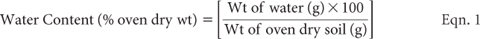
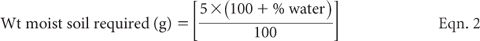
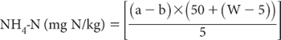

Mineralisable soil N resulting from anaerobic incubation is determined under laboratory conditions as the difference between the NH4-N measured in two separate soil extracts using 2 M KCl. The first is extracted immediately and the second after a seven-day anaerobic incubation at 40°C with the soil covered by water. The seven-day incubation is carried out in sealed containers that have minimal headspace. After incubation, 2.5 M KCl extracting solution is added (extractant now ≈2 M KCl) and mixed prior to analysis. The initial (day zero) extraction is the same as that carried out for mineral-N, based on 2 M KCl extraction (Method 7C2a). It follows that if an estimate of NO3-N is also required, it can be obtained, along with NH4-N, from the day zero extract.
The method described is adapted from Keeney (1982) and B Daly (pers. comm.). It provides an index of net anaerobic potentially mineralisable N (PMNAn), rather than a measure of true field mineralisation.
2 M KCl Extracting Solution
Prepare as for Method 7C1. Ensure any stored solution is well stoppered to prevent NH3 absorption from the laboratory environment.
2.5 M KCl
Dissolve 186.3 g KCl in water and make to 1.0 L. Water quality should be identical to that used to prepare the 2 M KCl Extracting Solution.
Reagent Water
Deionised or distilled water, analytically free of NH3/NH4+ and containing no particles >0.20 μm.
Brij 35 Wetting Agent
Prepare as for Method 5A2.
Wash Solution for Analyser
Add 1 mL Brij 35 Wetting Agent to each 1.0 L of 2 M KCl Extracting solution – same batch as used for the unknown samples.
Ammonium Nitrogen Reagents
Prepare as for Method 7C2a.
Ammonium Primary Standard
1 mL contains 0.20 mg of NH4-N.
Dissolve 0.4717 g ammonium sulfate [(NH4)2SO4; previously dried at 100°C for 4 h] in 2 M KCl extracting solution and make volume to 500 mL. Add 3–4 drops of chloroform (CHCl3) to extend shelf life. Solution can be held in borosilicate glass for at least 6 months if stored at ≈4°C.
1 mL contains 0.05 mg of NH4-N.
Pipette 125 mL of NH4 Primary Standard into a 500 mL volumetric flask and make to volume with 2 M KCl extracting solution. Freshly prepare when working standards are required.
Ammonium Working Standards
Pipette 0, 2.0, 5.0, 10.0, 15.0, 20.0, 30.0, 50.0, and 80.0 mL NH4 Secondary Standards into separate 200 mL volumetric flasks. Make to volume with 2 M KCl extracting solution. These solutions contain 0, 0.5, 1.25, 2.5, … 20.0 mg NH4-N/L, equivalent to soil concentrations of 0, 5, 12.5, 25 … 200 mg NH4-N/kg for an effective soil/solution ratio of 1:10.
Handling/Preparation of Soils
After in-field sampling, keep samples cool (≤4°C) and expeditiously transport soils to the laboratory in sealed plastic bages (polyethylene preferred). Room temperature storage in the laboratory for more than a few hours is not advised: if necessary, store at ≤4°C for only one to two days at most before commencing in-laboratory sample preparation.
Sieve field-moist sample through a 2 mm or 4 mm sieve in an NH3-free environment, taking care to remove visible roots and macro-fauna.
Determine the soil-water content of all samples, by oven drying at 105°C for 16–24 h as for Method 2B1. Typically, weigh accurately ≈20 g sub-samples into pre-weighed containers. Use the following equation to express water content as percent of oven-dry (105°C) soil:

Use the calculated water content for each sample to determine the weight of moist soil, equivalent to an oven-dry weight of 5.0 g of soil. Use formula:

Using the results obtained from Equation 2, weigh 2 × 5.0 g oven-dry equivalents from each well mixed, sieved field-moist soil sample. Transfer one of these into a 100 mL Extracting Bottle/Flask for ‘immediate extraction’ and the second into a universal bottle for ‘seven day incubation’.
Immediate Extraction
Add 50 mL of 2 M KCl Extracting Solution to each 100 mL Extracting Bottle/Flask containing the weighed soil sample. Include two reagent blanks and one laboratory reference sample around every 20–30 ‘samples’. End-over-end shaking (1 h) is preferred. Filter extracts to <0.20 μm, such as through Advantec Toyo 5C paper. Filtered extracts (capped) may be stored at ≈4°C if not scheduled for immediate analysis. These extracts may be stored for longer periods if frozen.
Incubation and Post-incubation
To the ‘universal bottles’, each containing 5.0 g (equivalent) of oven-dry soil, add 10 mL deionised water, tightly cap, then stand in an incubator operating at 40 ± 0.5°C for seven days.
Following incubation, remove ‘universal bottles’ from the incubator and shake each bottle to mix contents, then transfer quantitatively to 100 mL ‘extraction bottles’ using 40 mL of 2.5 M KCl solution. Next shake end-over-end for 1 h, then filter and store (if necessary) as for the ‘immediate extraction’ samples.
SFA Determination
Set up the SFA as shown in the flow diagram (Figure 7.10) or as recommended by the instrument’s manufacturer.
Switch on the computer and load the software, etc.
For both the ‘immediate extraction’ samples and the ‘incubated’ (Day 7) samples:

where
a = NH4-N concentration of sample solution (mg/L)
b = NH4-N concentration of blank solution (mg/L)
W = wet sample weight (g)
For a 5.0 g oven-dry sample and 50 mL of 2 M KCl extractant:
KCL -extractable NH4-N(mg/kg) =[(a – b) × 10 × MF]
where MF = air dry moisture to oven-dry moisture ratio.
Anaerobic Mineralisable N(mgN/kg) = NH4-N (Day 7) – NH4-N (initial)]
Report PMNAn-N (mgN/kg) to the nearest whole number on an oven-dry basis.
Figure 7.10. A micro-bore continuous flow manifold for KCl-extractable ammonium-N.